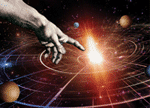
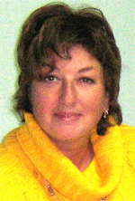

Истории и отзывы участников интернет-тренинга
Предыстория для ясности контекста
Дело было в конце апреля 2010 года. Наш сайт (nlping.ru) тогда еще носил простенький дизайн и жил на обычном хостинге. Я давно собирался провести вебинар "Как писать увлекательные статьи?", и тут почувствовал, что время настало. Причем, как-то вдруг и срочно! За 12 часов до начала вебинара я сообщил об этом в рассылке, и ожидал скромную групку. Мало кто может среагировать так быстро. Мне казалось.
В назначенный час в наш веб-класс пришло около 120 человек. Это только по эту сторону монитора кажется, что на сайте тесно не бывает...
В общем, хостинг рухнул. ...А люди продолжали приходить.
Слава Богу, что у нас был резервный сервачок, использующийся исключительно для тестирования всяких штук. Благодаря нашей могучей техподдержке мы за пол часа настроили на нем все необходимое. И еще за пол часа не без помощи самих участников перевели туда всех, кого смогли. Чуть более 120 человек.
Но технические сложности на этом не закончились. Ничто не было готово к такому количеству людей на борту, и начали трещать по швам "другие трубы". Чтобы не потонуть, мы были вынуждены ограничить количество участников, и поставили очень жесткие условия для входа в каждый следующий день - домашнее задание должно быть сдано строго к указанному времени. (Впрочем, это стандартные условия для бесплатных вебинаров, отличающие их от комфортных платных продуктов.)
Но 79 человек преодолели все трудности и показали потрясающие результаты. За что им респект и огромное спасибо! Энергия в группе была очень мощная, и как "канал" я был просто в восторге ;) ...Но когда из отзывов участников я узнал, как складывались их истории, у меня остался только один вопрос: "Я выбрал дату вебинара, или дата выбрала меня?" Почитайте эти удивительные истории!
Егор Булыгин
Истории участников вебинара
История Татьяны
- Значит так, мам! Я решила! Нужно уже быстрее выходить замуж!!!
- Ага…
- Нет. Надо сначала похудеть! А то кто меня такую толстую замуж возьмет?!
- Худей, что ж ты не худеешь?..
- Нет, мамуль, еще одно! Пора мне начинать зарабатывать деньги!!!
- Так зарабатывай! …Ты только болтать гораздая!
- Да куда меня в 18 лет возьмут? По специальности еще рано… Курьером? Я и так в универе учиться не успеваю, когда мне еще мотаться по всей Москве? …Знаешь, вот здорово было бы писать статьи. Тут же не важен возраст, да? Если получается писать – пиши!.. Но я не умею, и никогда не писала… Ладно-ладно, уже ухожу! Хватит на меня смотреть, как будто я издеваюсь. Я правда серьезно хочу начать чем-то заниматься, только не могу себя ни в чем найти…
День спустя.
- Тань, на! Прочитай! – мама принесла мне распечатанный лист бумаги.
Читаю:
«Здравствуйте, дорогие друзья!
…Задавали ли Вы когда-нибудь себе вопрос "Как начать писать?" Не глобально, а просто сесть и написать статью, имея просто идею. За пару-тройку часов. И чтобы она была гениальной.
...Вы хотите быть писателем? Вы будете им!
…С уважением, Егор Булыгин».
1. Шок.
2. Задумалась.
3. Улыбка на лице.
Спросите: почему улыбка?
Отвечаю: я всегда верила, что все, что ни попросишь у Вселенной, она тебе подарит. Должно же быть в этом мире волшебство! Должны сбываться мечты и желания! Верила!.. А теперь есть доказательства!
Совпадение?
Первый раз в жизни я заговорила о своем желании писать, и сразу же на голову «упало» это приглашение! Думаю – знак, судьба. Знаю. Чувствую.
Вебинар был наиинтереснейшим. Много полезной информации, много интересных людей, понимаешь: ты не одна такая – «в поиске», кроме тебя есть филологи, домохозяйки, студенты, психологи… Но самым важным для меня стало другое. Если бы не вебинар, я ни за что не написала бы своей первой статьи. Он подтолкнул, «пнул», поставил сроки, вынудил таки действовать! Только в хорошем смысле. В самом лучшем.
К настоящему времени я написала уже 4 меленькие статейки. Безумно хочется посмотреть, что будет, например, через год: во что все это выльется, насколько меня хватит, как далеко я смогу зайти. Было бы очень интересно увидеть графики подскочивших рейтингов продаж у людей, написавших статью-продающую. Или изданные сборники рассказов людей, которые пишут от души, изнутри, для себя, для читателей, для наслаждения.
Могу вот еще что показать. Вчера зашла на почту и прочитала письмо вот такого содержания:
«Здравствуйте. Ваша статья произвела
неизгладимое впечатление на мою
четырнадцатилетнюю дочь. Она просит у Вас
разрешения выставить её в контакт на свою
страничку. Если Вы согласитесь, то
сообщите, как её можно подписать.
С
уважением, Дина».
Наверное, это сравнимо с ощущением, когда твой ребенок выступает на школьной сцене. Еще на школьной, но уже сцене!
Спасибо вам огромное, Егор! Кратко, зато искренне! Думаю, прочитав эти слова, вы, Егор, почувствуете всю энергетику, вложенную в них! И улыбнетесь! Потому что вы сделали по-настоящему стоящее дело - помогли другим. Это достойно, это по-доброму, это – подвиг!
Татьяна Жукова,
Москва
ВКонтакте

Как писать увлекательные статьи? - тренинг в коробке, сделанный на основе того самого вебинара.
А в это время с другой стороны...
История Людмилы
Накануне вебинара моя дочь, студентка-финансистка, говорит:
- Ничего не хочу, ничего не желаю! А если бы могла, писала бы в гламурные журналы.
- Ну и пиши, что тебе мешает, - говорю я, обрадовавшись, что юная, притомившаяся от претензий к миру девица за что-то в нем зацепилась.
- Не умею!
- Ерунда! - говорю я. - Мозгами тебя Бог не обидел - пиши все, что в голову придет. А потом отредактируешь.
В этот день я получила рассылку Егора, которая всегда мне нравилась. Рассылка была с приглашением на вебинар, как писать увлекательные статьи. Мистика!
Не люблю говорить формулами, от которых за версту несет книжками по духовному развитию. Интереснее, когда у человека выстроилась некая концепция, которая "поглощает" новую информацию, определив ей место и значение. И все же придется сказать по-ученически: каждое событие приходит к нам в свое время. Пришло - значит, ты созрел, готов его принять. А если достаточно подкован в вопросах такого рода, то и пользоваться этим.
Вебинар получился классным. Было ощущение, что у ведущего, помимо знаний и опыта, есть личная заинтересованность в каждом из нас. Он умеет общаться с большими массами людей и, всегда оставаясь в центре, харизматично решать все проблемы, в том числе и технической поддержки. А по внутреннему ощущению - парадоксы нам нравятся, потому что возбуждают! - он говорил то, что ты как будто бы всегда знал. Вот и критерий истины - информация с ускорением стремится в тебя, "удобряя" те структуры мозга, которые ее "попросили".
Я редактор со стажем, и мне за время вебинара не один раз приходилось разводить руками: да я всегда это знала, но никогда не думала, что вышла на некую закономерность. Так - опыт, знаете ли. Значит, то, что мы постигали за время виртуального общения, человек вычислил, а то и выстрадал - иначе откуда у нас, учеников, взялся этот привкус открытия, взятого барьера, ощущения ленточки на финише?
Словом, спасибо за выучку - а лучше: за науку! Мы с нетерпением ждали начала каждого выпуска, ловя себя на мысли: пусть работает сервер! А когда он нас слегка подводил, это казалось большой бедой: ведь мы не услышим чего-то важного - а, значит, никогда не напишем статьи, которая станет началом нового этапа в жизни.
А вот и еще об одном совпадении: я только что писала заголовки к крошечным абзацам, которые и осознать-то нельзя. А моя сотрудница так и сыпала свеженькими формулами, которые идеально ложились на текст! И вот теперь проблема заголовков уже не кажется неразрешимой - она коварна, конечно, но на нее надо идти, не боясь нестандартных ходов.
Спасибо за то, что вы сняли с нас страх браться за трудные задачки. Почему-то кажется, что они стали легче.
Людмила Жукова,
редактор,
Москва
И еще одна удивительная «случайность»
История Юлии
«Вселенная помогает нам!» Эта или подобные мысли все чаще попадаются мне в последнее время: на страницах интернета, в популярных книгах по психологии, на семинарах. Уже не помню, каким образом я вышла на сайт Егора Булыгина и подписалась на рассылку. Случайность.
Утром 27 апреля проверила электронную почту, обнаружила приглашение на вебинар "Как писать увлекательные статьи". Прочитала, закрыла, забыла. У меня нет ни блога ни сайта. Я люблю писать, но только для себя. Считаю, что другим мои мысли не интересны. Правда 3 месяца назад в небольшом русскоязычном журнале, выходящем в Германии, была опубликована моя первая статья. Отзывы были неплохие, но я до сих пор не верю в себя, свои способности.
Днём 27 апреля зашла в редакцию того журнала. Неожиданно получила предложение стать ведущей рубрики. Мысль заработала. Это хорошая возможность для развития. Я попросила время подумать, так как сомневалась, что справлюсь. Я понимаю, что пока не умею писать статьи, а где и как могу быстро этому научиться, не знаю. Хотя, постой! Как удачно! Возможно ли такое случайное совпадение! У меня есть реальная возможность быстро научиться писать статьи! Попробую. Обязательно приму участие.
Вечер 27 апреля - с нетерпение ждала начало вебинара. Уже совершенно с другим чувством. Интерес, радость в сочетании с удивлением: утро – письмо, днем – предложение. Еще примешивается неуверенность, а научусь ли, смогу ли.
Сильное впечатление на меня произвел рассказ Егора о событии, приведшем его к мысли о вебинаре - "купюра, прилетевшая к ногам". Случайность. Ну вот, снова! Хотя решение и выбор всегда за нами.
С 27 по 30 апреля – случайностей уже не было, была интересная работа и куча положительных эмоций. Цель – дойти до конца. Задача - обязательно сделать домашнее задание и пройти в следующий день. Награда - удовлетворение и радость от процесса общения.
14 мая - впервые появившееся чувство уверенности "Я справлюсь". Мою статью заметили, она вошла в список победителей. Теперь я знаю, что буду писать для журнала. Спасибо, Егор! Ты не только дал мне необходимые знания, ты помог мне поверить в себя!
Что это цепь случайных событий или...
Юлия Шапорина,
преподаватель детской педагогики и психологии,
Германия
Как писать увлекательные статьи? - тренинг в коробке, сделанный на основе того самого вебинара.
Отзывы
Отзыв Сергея
Что удалось действительно здорово
СОДЕРЖАНИЕ. Полностью раскрывает тему. Гармонично сочетает стройную систему основных теоретических понятий и положений с дополняющими конкретными практическими рекомендациями, включая многочисленные неочевидные приемы креативности, секреты и маленькие хитрости мастера. Вот только главные и принципиально новые для меня позиции:
– авторская стратегия эффективного написания статьи,
– пошаговый алгоритм техники освоения стратегии,
– разделение написания и редактирования как самостоятельных независимых процессов,
– конкретизация адресной аудитории, создание виртуального читателя,
– три различных вида статей: рекламная, техническая, развлекательная,
– три рабочие схемы подробных алгоритмов написания каждой из них,
– принцип трех единиц: 1 статья – 1 тема, 1 абзац – 1 тезис, 1 предложение – 1 мысль,
– анкета статьи как начальная опорная точка.
Весь материал продуманно разбит на части по темам и по последовательности изложения с целью постоянного нарастания интереса и концентрации внимания к финалу.
ФОРМЫ. Исключительно разнообразные активные дистанционные формы подачи содержания с опорой на обратную связь. Выделим основные достоинства.
Продуманная последовательность подачи материала, основанная на законах восприятия и пробуждающая активность слушателей: лекции – ответы на вопросы – повтор тезисов – домашние задания – графические схемы – обсуждение результатов – бонусы и поощрения.
Включение всех трех каналов восприятия – слухового на лекциях, визуального на материалах и кинестетического при самостоятельной работе, что способствует быстрому погружению в процесс обучения.
Использование nickname’ов снимает внутренние барьеры при опубликовании текстов и комментариев, особенно для тех, кто делает это впервые. Анонимность и единое структурированное место для совместной работы уравнивают участников, обеспечивают свободу взаимодействия и нейтрализует воспитанную школой подсознательную боязнь сделать ошибку или дать неправильный ответ. Позволяет вывести участников в единое игровое пространство вебинара, которое обычно формируется в очных тренингах, имитационно-моделирующих, организационно-деятельностных и других играх.
Грамотно поставленные вопросы для оценки статьи в последнем домашнем задании вызывают восхищение. Кроме того, что в них предлагается восстановить в памяти весь пройденный материал и тут же его применить, по сути, предложена очень эффективная доброжелательная форма рецензии, позволяющая выделить достоинства статьи и предложить варианты ее улучшения. И ни слова о недостатках.
РЕЗУЛЬТАТ. Участники, выполнившие все задания, получили структурированные знания о том, как писать статьи, практические навыки их написания, редактирования и рецензирования, и главное, успешный опыт достижения поставленной цели и получения завершенного конечного результата в виде своей собственной успешной статьи (серии статей, блога, сайта и т.д.).
ТЕХПОДДЕРЖКА. Заслуживает отдельной благодарности. Ее незримое присутствие проявлялось не столько в живых комментариях в чате, как в оперативном решении довольно серьезных технических проблем по ходу вебинара (замена сервера для обеспечения работы неожиданно большого числа участников, обеспечение бесперебойного звука, и др.).
ВЕДУЩИЙ. Кроме того, что Егор сам разработал содержание и формы семинара и блестяще его провел, заметны его заинтересованность в результате, открытость к взаимодействию, профессиональная компетентность, педагогическое мастерство (андрогогическое, точнее, но уж очень это слово неблагозвучное), и вообще на фото в открытом эфире он просто душка :)
Что же можно усилить?
Похоже, и придраться-то не к чему. Текст местами мелковат на схемах, так Маруся ГлухоМань замечательно удобно свела схемы в таблицы и разослала всем, кто просил в чате, за что ей отдельная благодарность :) Для усиления включенности в процесс и поддержания игрового пространства возможно, стоит выкладывать для скачивания лишь по одной бонусной записи в день, а раздел Контакты открывать лишь в самом конце. Ну вот и все!
Сергей Войтенко,
Работаю в НП СПб,
Преподаю в СПбГУ,
Духовно расту в Антее,
Пишу ВКонтакте,
Санкт-Петербург
Отзыв Ирины
По началу мысли были такие: «Егор – мастер своего дела и книгу только что издал, он достиг в этом деле гораздо больше меня и у него, есть чему поучиться. Даже, если он не раскроет все свои «фишки», то я просто потрачу это время на написание нужного мне материала. А если повезет, и со мной поделятся профессиональными секретами, то вообще красота». И я приготовилась использовать вебинар в качестве паровоза-тягача, да простит меня Маэстро, чтобы написать шедевральную (ну или хотя бы настоящую грамотную вдохновенную) продающую статью для своего тренинга. Домашки же по любому делать придется, это я хорошо понимала. А для меня сесть и начать писать – это самая большая сложность.
Поразило: количество участников вебинара (больше ста человек, из которых больше половины финишировали, а значит, полностью выполнили все задания и преодолели технические трудности, проявив терпение, уважение к ведущему и друг другу, имея очень большое желание создать свой шедевр).
Поразило: стойкость, сила духа, эмоциональная уравновешенность и уже в последнюю очередь профессионализм Егора. Именно в последнюю очередь профессионализм, потому что без всего вышесказанного профессионализм оказался бы ненужным. Технические условия проведения вебинара оказались сложными, аудитория просто очень большая, и сохранить спокойствие… Егор! Просто снимаю шляпу!
Поразило: количество ценной профессиональной информации, которую ведущий выдавал нам не лимитировано, на-гора, бери, сколько сможешь унести. Четыре вечера серьезной, профессиональной, проверенной, концентрированной и утрамбованной информации о приемах написания статей – снова многократно снимаю шляпу!
Особенно поразило: четвертый день, потому что именно в этот день я получила волшебный мешочек с теми самыми «фишками», которые мне просто до зарезу были нужны – это касается продвижения себя и своих материалов в интернете.
Огромная признательность за дополнительные, бонусные части и записи кастов, а также за максимально продуманную структурированную систему подачи материала.
Мне хочется далее писать только заглавными буквами и восклицательными знаками :)
МОЯ БОЛЬШАЯ ЧЕЛОВЕЧЕСКАЯ БЛАГОДАРНОСТЬ ЕГОРУ БУЛЫГИНУ: ТРЕНЕРУ, АВТОРУ ПРОФЕССИОНАЛУ СВОЕГО ДЕЛА!
Ирина Осютина,
практикующий сертифицированный коуч,
тренер, создатель и партнер компании АртКоуч,
соавтор арт-проекта по саморазвитию и реализации жизненных задач «Путь Алмазного Огранщика».
www.artcoach.biz
Отзыв Александра
Здравствуй, Егор!
Наше знакомство состоялось на тренинге "Метод интуиции", я его прошел в очном и заочном (онлайн курс) вариантах. Очень понравились и тот и другой.
Поэтому с интересом пошел на вебинар "Как писать увлекательные статьи". За четыре дня (правильнее сказать, ночи), пройден колоссальный путь: от чайника, к пробе пера и ощущению вкуса творчества! И, казалось бы, не совсем уж чайник - имею публикации. Но "сколько нам открытий чудных готовит просвещенья дух"... Действительно открытий!
И далее хочется продолжить то же словами А.С.Пушкина: "Мы все учились понемногу: чему-нибудь, да как-нибудь..." Отсюда навыки письма большинства из нас. И тем удивительнее, что всего за 4 дня возникло четкое ощущение "как писать". Прекрасно дан материал: методично, системно, творчески!
Большое спасибо за этот подарок! Спасибо за новые возможности, радость творчества и открытий!
Александр Кирьянов,
Новосибирск
Отзыв Лилии Шевченко
Егор, добрый вечер.
Вебинар-потрясающий. Не только сам отлично выстроенный материал, форма его подачи. Но и наполненность, искрометность и одновременно умелая сдержанность Вашей личности, Егор.
Писать мечтаю с детства. То есть, уже 6 десятков лет. Пишу в стол. Девиз был: "Никогда и никому". Только однажды это было. Осталось ощущение потери, напрасности того, что открыла
свое, потаенное.
Вебинар мне открыл самое себя навстречу остальному миру. Инструменты, которыми Вы нас вооружили - хорошо выстроены, определены. Но есть что-то, что я поймала во время вебинара: Если бы Вы не вложили в них
частицу своей души, они бы так не сработали. Все дни, проведенные с такой талантливой молодежью, как Вы и все студенты вебинара, принесли мне несказанное удовольствие. Это - эмоции.
А практические выводы:
1. "И не страшно совсем"
2. "И не жалко совсем"
3. "Имея такие инструменты, которыми Вы нас так щедро буквально забросали - ВОЗМОЖНО ВСЕ!"
Лилия Шевченко,
владелец 15-летнего бизнеса в сетевой индустрии,
Харьков.
Отзыв Лилии Юсуповой
Очень полезный вебинар, как и все остальные!
Столько нужной информации за такой короткий срок! Невероятно "вкусные" бонусы, логика их подачи, ничего лишнего, все складывается именно в инструмент, который просто нужно брать и использовать.
У меня опыта написания статей не было никакого. Я всё думала, мол было бы здорово, я вроде если и писала когда то, то не плохо, надо как нибудь попробовать... вот только с чего начать?
И я пробовала, но никогда не доводила дело до конца. Получалось скомкано, я разочаровывалась в себе и забрасывала дописывать. Ну а после такого вебинара начать писать что-то и не дописать, просто кощунство! Откопала недописанное, нашла это занятным и обязалась довести до ума. Тем более то, что я написала во время вебинара мне, в общем то, нравится.
До вебинара я думала, что умею писать. Мне нравилось просто так думать. А теперь я знаю. Потому что пишу. Благодаря урокам вебинара, начала развивать в себе эту жилку, и поверила наконец в себя, поверила в то, что я могу писать. И это так здорово! Это такое удовольствие! Думаю вскоре я буду думать, как я могла не писать когда то?!
И ещё что-то щелкнуло во мне. Словно открылась целая сфера, или не паханное поле деятельности, или направление в саморазвитии. Ведь когда мы пишем, мы познаем себя, как и художники в своих картинах, поэты в стихах, актеры на сцене. И как было сказано Антоном Павловичем Чеховым: "Кто испытал наслаждение творчества, для того все другие наслаждения уже не существуют".
Спасибо, Егор! Ты всегда так компактно и так качественно подаешь материал. Очень было интересно!
С уважением,
Лилия Юсупова
И в завершение экспромт от участника вебинара
Я загадала встретить человека,
Чтобы помог осуществить мечты,
Да и фигня,что мне уже почти полвека,
И вот Егор попался на пути.
Он непременно разглядит мои таланты,
Ему Вселенная подаст волшебный знак,
И камни превратятся в бриллианты,
Как в чудо превращается пустяк...
Алька
Как писать увлекательные статьи? - тренинг в коробке, сделанный на основе того самого вебинара.